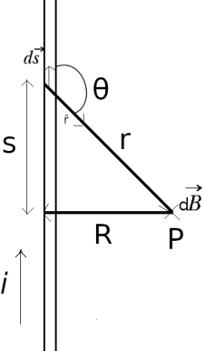

Biot-Savart Law (Laplace's Law)
Figure 1 shows a wire of arbitrary shape carrying a current i. We want to find the magnetic field B at a nearby point P. The magnetic field dB produced at point P at distance r by a current-length element ds turns out experimentally to be
where r̂, a unit vector that points from ds toward P. This is known as Biot-Savart law or first elementary Laplace Law. The symbol μ0 is a constant, called the permeability constant, whose value is defined to be exactly
μ0 = 4π × 10–7 T · m/A ≈ 1.26 × 10–6 T · m/A
This law, which is experimentally deduced, is an inverse-square law. We shall use this law to calculate the net magnetic field B produced at a point by various distributions of current.
Magnetic field of a linear conductor
From Biot-Savart low, the magnitude of dB is thus
where θ is the angle between the directions of ds and r̂.
The direction of dB in Fig. 2 is that of the vector ds × r̂— namely, directly into the page. Note that dB at point P has this same direction for all the current-length elements into which the wire can be divided. Thus, we can find the magnitude of the magnetic field produced at P by the current-length elements in the upper half of the infinitely long wire by integrating dB from 0 to ∞. Further, the magnetic field produced by the lower half of the wire is exactly the same as that produced by the upper half. To find the magnitude of the total magnetic field B at P, we need only multiply the result of our integration by 2. We get
The variables θ, s, and r in this equation are not independent; Fig. 2 shows that they are related by
r = (s2 + R2)1/2
and
sin θ = sin (π − θ) = R/(s2 + R2)1/2
With these substitutions the integral becomes